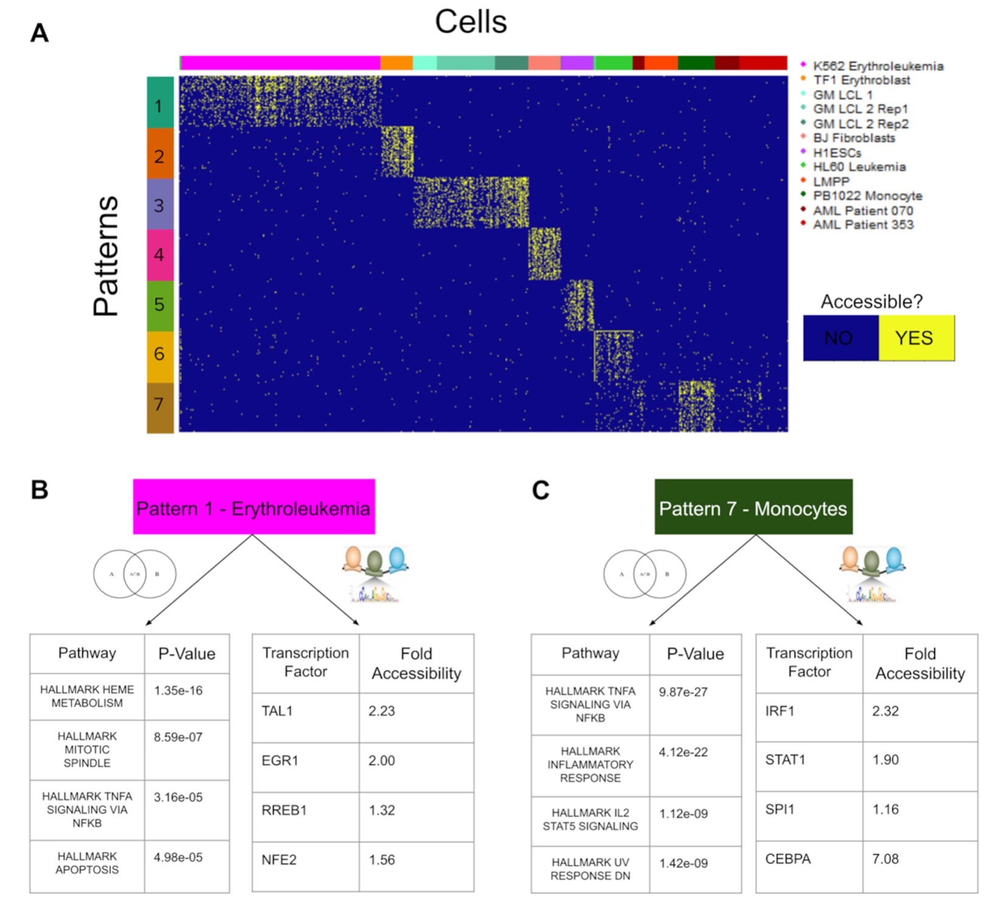

Michael D. Kessler

I am a biomedical scientist with wide ranging experience in oncology, genetics, genomics, and bioinformatics.
Currently, I am working on cancer genomic research projects as a postdoctoral fellow in the Oncology Division of Biostatistics and Bioinformatics at The Johns Hopkins University School of Medicine.
My research interests lie at the intersection of human genetics, cancer genomics, and translational bioinformatics, and I work to leverage data science tools and techniques to answer pertinent biomedical questions. I am also particularly interested in the use of bioinformatic analysis to inform increasingly precise clinical decisions.
2020
|

|
Matrix factorization and transfer learning uncover regulatory biology across multiple single-cell ATAC-seq data sets
Rossin Erbe, Michael D. Kessler, Alexander V. Favorov, Hariharan Easwaran, Daria A. Gaykalova, Elana J. Fertig Nucleic Acids Research 2020. |
2019

|
Evolutionary history of modern Samoans
Daniel N. Harris, Michael D. Kessler, Amol C. Shetty, Daniel E. Weeks, Ryan L. Minster, Sharon Browning, Ethan E. Cochrane, Ranjan Deka, Nicola L. Hawley, Muagututi‘a Sefuiva Reupena, Take Naseri, Trans-Omics for Precision Medicine (TOPMed) Consortium, TOPMed Population Genetics Working Group, Stephen T. McGarvey, and Timothy D. O’Connor Preprint 2020. (bioarxiv) |

|
Learning Interpretable Disease Self-Representations for Drug Repositioning
(co-first author*) Fabrizio Frasca*, Diego A. Galeano*, Guadalupe Gonzalez, Ivan Laponogov, Kirill Veselkov, Alberto Paccanaro, Michael M Bronstein NeurIPS Graph Representation Learning Workshop. 2019. pdf (arxiv) |

|
The Geometric Sparse Matrix Completion Model for Predicting Drug Side effects
Diego A. Galeano, Alberto Paccanaro Preprint. 2019. (bioarxiv) |
2018

|
A recommender system approach for predicting drug side effects
Diego A. Galeano, and Alberto Paccanaro IJCNN. 2018. (IEEE Xplore) |
2017

|
Mining the Biomedical Literature to predict shared drug targets in drugbank
(co-first author*) Horacio Caniza*, Diego A. Galeano*, and Alberto Paccanaro IEEE-CLEI. 2017. (IEEE Xplore) |
2016

|
Drug targets prediction using chemical similarity
Diego A. Galeano, and Alberto Paccanaro IEEE-CLEI. 2016. |
2015

|
Posturography Platform and Balance Control Training and Research System Based on FES and Muscle Synergies
Diego A. Galeano, Fernando Brunetti, Diego Torricelli, S. Piazza, JLP Rovira Springer Series in Computational Neuroscience (book). 2015. |
2014

|
A tool for balance control training using muscle synergies and multimodal interfaces
Diego A. Galeano, F. Brunetti, D. Torricelli, S. Piazza, JLP Rovira BioMed research international (Hindawi) 2014. |
2013

|
A low cost platform based on FES and muscle synergies for postural control research and rehabilitation
Diego A. Galeano, F. Brunetti, S. Piazza, D. Torricelli NEUROTECHNIX 2013. |
1 - Predicting the frequencies of drug side effects

2 - Extending the druggable genome

Diego Galeano is a Postdoctoral Researcher in Data Science at Fundação Getulio Vargas (FGV) Rio de Janeiro, Brasil. Diego completed his Ph.D. at Royal Holloway, University of London in 2019, working under the supervision of Prof. Alberto Paccanaro. Diego received a full-ride ITAIPU scholarship for undergraduate studies in Paraguay, and in 2015, the BECAL scholarship for his doctoral studies in London. Diego was a research fellow of GersteinLab at Yale University in 2017, where he worked in model interpretability and enhancer prediction. This research visit was thanks to the Royal Holloway Travel Award, the Santander Travel Award and the BECAL Travel Award. He also received the best poster and presentation awards for three years at the Annual Computer Science Colloquium at Royal Holloway. His interests lie in applications of AI and machine learning in healthcare, biology and medicine. He is also interested in the social impact of AI.

Posdoctoral Researcher
Escola de Matemática Aplicada, FGV-Emap
Office: NA
diego.galeano@fgv.br
Our paper is finally out! It has been a long journey! Thanks to my supervisor @A_Paccanaro and co-authors @shantaolee @MarkGerstein! Please share our work #drugsideeffects #drugsafety #machinelearning #AI @NatureComms https://t.co/mftdHUXokF
— diego galeano (@diegogaleano05) September 11, 2020